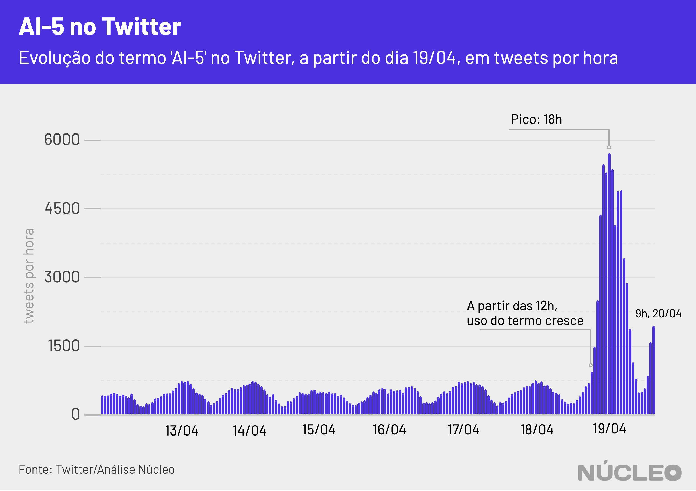

De tempos em tempos manifestantes pró-Bolsonaro pedem a volta do Ato Institucional Nº 5. No domingo 19 de abril, Dia do Exército, não foi diferente. Mas o termo “AI-5” disparou no Twitter não pelos perfis de seus defensores, e sim por seus críticos.
Análise do Núcleo com 136 mil tweets com esse termo mostrou que as principais publicações, aquelas com mais interações (curtidas e retuítes), se posicionaram majoritariamente contra o instrumento que tirou liberdades democráticas na década de 1960.
Dos 100 tweets com mais engajamento, 76 foram desfavoráveis ao AI-5, ao passo que 14 minimizam os protestos favoráveis e apenas sete foram a favor.

É importante porque…
-
O Twitter sempre foi importante para a comunicação de Bolsonaro, inclusive em busca de apoio. Perder a conversa lá significa enfraquecimento dele em um de seus principais canais
-
Boa parte das autoridades se comunica com suas bases pelo Twitter, que se tornou um termômetro de discussão política e de assuntos do momento no país, pautando autoridades, imprensa e o debate em geral
No total, foram contabilizadas 1,63 milhão de interações nos 136 mil tweets. Os 100 maiores tweets foram responsáveis por 1,2 milhão de interações, o que indica um grande número de publicações com pouca ou nenhuma interação.
As críticas de ativistas, políticos e personalidades da esquerda serviram para impulsionar o uso do termo na rede social, especialmente para criticar a postura do presidente.
Jair Bolsonaro fez um breve discurso no evento realizado à frente do Quartel-General do Exército, em Brasília, com a presença de manifestantes que seguravam cartazes a favor da intervenção militar e do AI-5, e pediam pela saída do presidente da Câmara dos Deputados, Rodrigo Maia (DEM-RJ).
O termo Ai-5 teve uma permanência pequena, mas constante, no Twitter pelo menos desde o dia 12, chegando a quase 6.000 tuítes por hora no fim da tarde de domingo.
Os dados consideram apenas tweets únicos, ou seja, sem considerar retweets e seus comentários. Isso serve para medir a espontaneidade de cada tweet, em vez da reação das pessoas a eles. Os trending topics do Twitter consideram retuítes em suas contas sobre o montante de publicações, o que infla o número de tweets realmente originais.

Principais tweets
- Com mais interações no geral
Soltei o berrante na cara dos gado que pedia AI-5 agora em Brasília, tentaram quebrar meu carro mas não fizeram nem cosquinha. pic.twitter.com/HrKepFjsRF
— GugaNoblat (@GugaNoblat) April 19, 2020
- Pró-Ai-5 com mais interações
Galera que tá no #TchauMaia e no AI-5 por favor, não esqueçam que se o @davialcolumbre não pautar a carteira verde e amarela amanhã ela vai caducar e a chance de empregar milhões no pós vírus Chinês vai pelo ralo! Eles querem o caos econômico, não deixem de cobrar o Alcolumbre!!
— TeAtualizei 🇧🇷👊🏻❤️ (@taoquei1) April 19, 2020
- Tweet que minimiza o AI-5 com mais interações
Impressionante a canalhada querendo desqualificar manifestações a favor de Bolsonaro e contra arroubos de Rodrigo Maia como se fossem atos pelo ai-5, ou contra o Congresso.
— Flavio Bolsonaro (@FlavioBolsonaro) April 20, 2020
Democracia pulsando forte, povo mandou seu recado hoje.
Na imprensa
-
Esquerda inflama após ato pró-intervenção com Bolsonaro, e direita fala de golpe contra presidente ⋅ Folha de S.Paulo ⋅ (20/04/2020)
-
O bolsonarismo se reorganiza nas redes ⋅ Veja ⋅ (20/04/2020)
METODOLOGIA
O Núcleo capturou cerca de 136 mil tweets com o termo ‘AI-5’ e variações ortográficas entre dias 11 e 20 de abril, utilizando a API gratuita do Twitter. O código para extração pode ser encontrado aqui.
Com a finalidade de manter a privacidade de usuários com perfis pouco notórios, o Núcleo não vai divulgar a base total com, os dados brutos – cada pessoa pode rodar o código de extração para obter esses resultados. Os dados com os 100 tweets mais populares e a série temporal podem ser acessados aqui.
A conta considera apenas tuítes únicos, ou seja, exclui retuítes e respostas a tuítes. Isso porque queremos medir a espontaneidade de publicações sobre o tema.